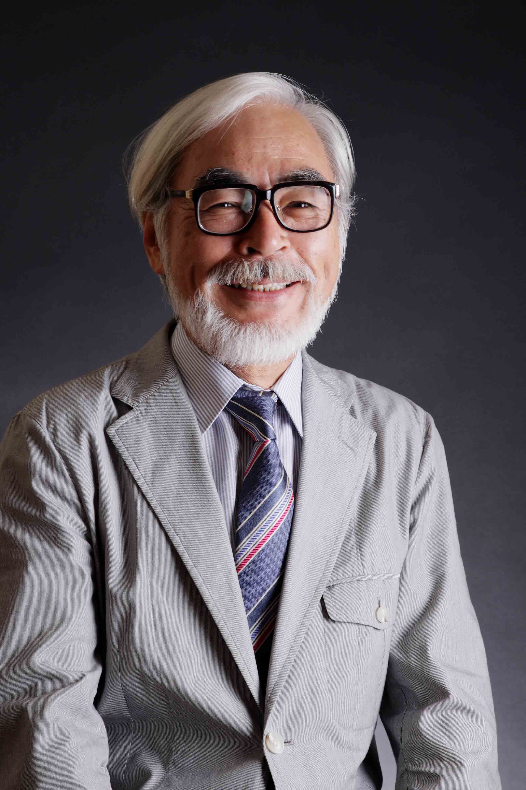
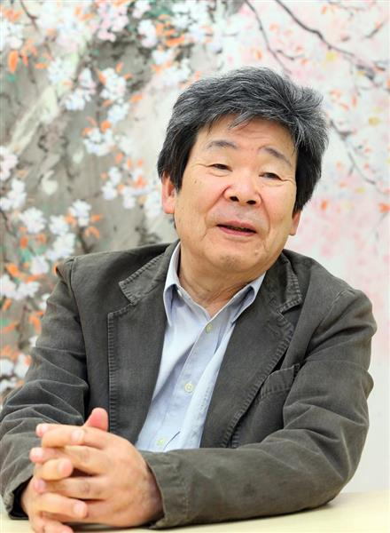

Studio Ghibli: O Surgimento
O Studio Ghibli é um estúdio de animação japonês, sediado em Koganei, Tóquio. Fundado em 1985, o estúdio já produziu 21 longas de animação, sendo o primeiro O Castelo no Céu (1986) e o mais recente As Memórias de Marnie (2014). O Studio Ghibli foi fundado em 1985 por Hayao Miyazaki, Isao Takahata, Toshio Suzuki e Yasuyoshi Tokuma, logo após o sucesso de Nausicaä do Vale do Vento, no ano anterior. O estúdio lançou seu primeiro filme, O Castelo no Céu, no ano seguinte.
O logotipo da empresa é o Totoro, o personagem do filme Meu Amigo Totoro, lançado em 1988. Com exceção de seis produções, todos os filmes do estúdio foram dirigidos por Hayao Miyazaki e Isao Takahata. Toshio Suzuki, por sua vez, é o produtor da maioria deles. Em 2001, o Museu Ghibli, um museu dedicado as obras do estúdio, foi inaugurado.

Meu Amigo Totoro
As irmãs Mei e Satsuke mudam-se para uma nova casa e descobrem que uma floresta nas proximidades é habitada por criaturas chamadas totoros. Elas acabam se tornando amigas do mais velho deles, e ficam boa parte do tempo com ele, pois a mãe delas está num hospital e o pai sai para dar aulas. Ao mesmo tempo que mostra a elas algumas verdades da vida, o totoro lhes mostra um mundo fantástico.

O Castelo Animado
Uma bruxa lança uma terrível maldição sobre a jovem Sophie transformando-a numa velha de 90 anos. Desesperada, ela embarca numa odisseia em busca do Castelo Andante, onde reside um misterioso feiticeiro que poderá ajudá-la a reverter o feitiço.
O Túmulo dos Vagalumes
Os irmão Setsuko e Seita vivem no Japão em meio a Segunda Guerra Mundial. Após a morte da mãe em um bombardeio e a convocação do pai para a Guerra, eles vão morar com alguns parentes. Insatisfeitos, saem da cidade e acabam em um abrigo na floresta.
Historia
Studio Ghibli foi fundado em 1985 por Hayao Miyazaki, Isao Takahata, Toshio Suzuki e Yasuyoshi Tokuma, logo após o sucesso de Kaze no Tani no Nausicaä no ano anterior. O estúdio lançou seu primeiro filme, Tenkū no Shiro Rapyuta, no ano seguinte. O logotipo da empresa é Totoro, um personagem do filme Tonari no Totoro, lançado em 1988. Com exceção de seis produções, todos os filmes do estúdio foram dirigidos por Hayao Miyazaki e Isao Takahata. Toshio Suzuki, por sua vez, é o produtor da maioria deles. Em 2001, o Museu Ghibli, um museu dedicado às obras do estúdio, foi inaugurado.
Diretores
-
Hayao Miyazaki

-
Isao Takahata

- Toshio Suzuki

- Toshio Suzuki
| Dados Técnicos | |
|---|---|
| Atividade | Animação |
| Indústria | Cinema |
| Fundação | 15 de junho de 1985 |
| Fundadores | Isao Takahata, Hayao Miyazaki, Toshio Suzuki e Yasuyoshi Tokuma |
| Sede | Koganei, Tóquio, Japão. |
| Produtos | Filmes de animação; Curtas de animação; Séries de animação; Comerciais para TV. |
| Presidente | Kiyofumi Nakajima |
| Empresa-mãe | Tokuma Shoten (1985–2005) |
| Antecessora | Topcraft |
| Site oficial | ghibli.jp |